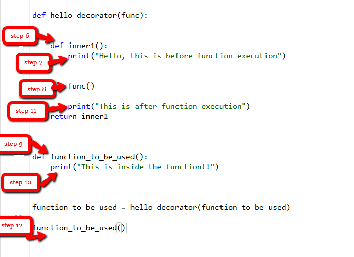

A Crash Course in Python: Part 3
Contents
A Crash Course in Python: Part 3#
Lambda Functions#
Syntax
lambda arguments : expression
An anonymous function means that a function is without a name
The lambda keyword is used to create anonymous functions
Python lambda properties:#
can have any number of arguments but only one expression, which is evaluated and returned.
used when objects are required
syntactically restricted to a single expression
have various uses in particular fields of programming, besides other types of expressions in functions.
Example: Lambda Function#
calc = lambda num: "Even number" if num % 2 == 0 else "Odd number"
print(calc(20))
Even number
Example 2: Lambda Function#
string = "Drexel Dragons"
# lambda returns a function object
print(lambda string: string)
<function <lambda> at 0x0000020320AA00D0>
Explanation: The lambda is not being called by the print function, but returning the function object and the memory location. So, to make the print to print the string first, we need to call the lambda so that the string will get pass the print.
Example 2: Invoking lambda return value to perform various operations#
# Returns all of the non-digit parts of a string
filter_nums = lambda s: "".join([ch for ch in s if not ch.isdigit()])
print("filter_nums():", filter_nums("Drexel101"))
filter_nums(): Drexel
# Adds an exclamation point at the end of a string
do_exclaim = lambda s: s + "!"
print("do_exclaim():", do_exclaim("I am tired"))
do_exclaim(): I am tired!
In-Class Exercise:#
Use the Lambda function to find the sum of all integers in a string
Input an integer n
Use a for loop to extract the individual integers
Print the sum
# Type your solution here
# # finds the sum of all integers in a string
find_sum = lambda n: sum([int(x) for x in str(n)])
print("find_sum():", find_sum(104))
find_sum(): 5
Example: Use of lambda function inside a function#
l = ["1", "2", "9", "0", "-1", "-2"]
# sort list[str] numerically using sorted() a build in function
# and custom sorting key using lambda
print("Sorted numerically:", sorted(l, key=lambda x: int(x)))
Sorted numerically: ['-2', '-1', '0', '1', '2', '9']
# filter positive even numbers
# using filter() and lambda function
print(
"Filtered positive even numbers:",
list(filter(lambda x: not (int(x) % 2 == 0 and int(x) > 0), l)),
)
Filtered positive even numbers: ['1', '9', '0', '-1', '-2']
# added 10 to each item after type and
# casting to int, then convert items to string again
print(
"Operation on each item using lambda and map()",
list(map(lambda x: str(int(x) + 10), l)),
)
Operation on each item using lambda and map() ['11', '12', '19', '10', '9', '8']
Object Oriented Concepts#
Classes#
Is a logical group that contains attributes and methods
This allows programs to be created with simple objects that are easy to read and modify
It says that all instances of a class have the same attributes and methods
Example use case:#
Suppose you have a bunch of rubber ducks in your store and you want to keep an inventory where each duck has some attributes (e.g., color, size, name). This is a perfect use case for a class. You can define a class that is rubber ducks, which has a set of definable attributes.
Classes are created by the keyword
classAttributes are variables that belong to a class
Attributes can be accessed via the (
.) operator (e.g.,class.attribute)
Start with defining the class#
class Rubber_Duck: # Defines the class
pass # passes when called
We created a class that does nothing :)
Objects#
An object is a variable that has a state and behavior associated with it.
An object can be as simple as a integer
An object can be as complex as nested functions
Components of Objects#
State: It is represented by the attributes of an object. It also reflects the properties of an object.
Behavior Methods of the object, and how the object interacts with other objects
Identity The Unique name that is used to identify the object
Let’s build and object from the class#
obj = Rubber_Duck()
This created an object of the type
Rubber_Duck
The self class#
Class methods have an initial parameter which refers to itself
If we call
myobj.method(arg1, arg2)we are actually callingmyobj.method(myobj, arg1, arg2)
To simplify this in classes, the
selfrefers to the object
The __init__ method#
def __init__(self, arg):
self.arg = arg
This method is called when the object is instantiated
In-Class Exercise: Creating a class and objects with attributes and instance attributes#
Task:
Create a Class Rubber_Duck
Add an attribute
obj_typeand set it equal to “toy”Use the
__init__function to set the nameInstantiate two objects
luke_skywalkerwith a nameLuke Skywalkerandleia_Organawith a nameLeia Organa
# Type your solution here
class Rubber_Duck: # Defines the class
# Class attribute
obj_type = "toy"
# Instance attribute
def __init__(self, name):
self.name = name
# Object instantiation
luke_skywalker = Rubber_Duck("Luke Skywalker")
leia_organa = Rubber_Duck("Leia Organa")
Test#
# Accessing class attributes
print(f"Luke Skywalker is a {luke_skywalker.__class__.obj_type}")
print(f"Leia Organa is a {leia_organa.__class__.obj_type}")
# Accessing instance attributes
print(f"My name is {luke_skywalker.name}")
print(f"My name is {leia_organa.name}")
Luke Skywalker is a toy
Leia Organa is a toy
My name is Luke Skywalker
My name is Leia Organa
Adding a Method#
You can add methods within the class
Task:
Add a method to the class
Rubber_Duckthat completes the linef"My name is {leia_organa.name}"whenclass.speakis called
# Your solution goes here
class Rubber_Duck: # Defines the class
# Class attribute
obj_type = "toy"
# Instance attribute
def __init__(self, name):
self.name = name
def speak(self):
print(f"My name is {self.name}")
# Object instantiation
luke_skywalker = Rubber_Duck("Luke Skywalker")
leia_organa = Rubber_Duck("Leia Organa")
Test#
luke_skywalker.speak()
leia_organa.speak()
My name is Luke Skywalker
My name is Leia Organa
Inheritance#
Inheritance allows one class to inherit properties from another class
Usually referred to as child and parent classes
It allows you to better represent real-world relationships
Code can become much more reusable
It is transitive meaning that if Class B inherits from Class A than subclasses of Class B would also inherit from Class A
Inheritance Example#
Syntax
Class BaseClass: {Body} Class DerivedClass(BaseClass): {Body}
Step 1: Create a parent class with a method#
Create a parent class named
Personthat defines anameandageAdd a Class method that prints the name and title
# Your solution goes here
class Person:
# Constructor
def __init__(self, name, age):
self.name = name
self.age = age
# To check if this person is an employee
def Display(self):
print(self.name, self.age)
Testing#
jedi = Person("Darth Vader", 56)
jedi.Display()
Darth Vader 56
Step 2: Creating a Child Class;#
Create a child class of
Person,Jedithat has a methodPrintthat printsJedi's use the force
# Your solution goes here
class Jedi(Person):
def Print(self):
print("Jedi's use the force")
Testing#
# instantiate the parent class
jedi_info = Jedi("Darth Vader", 56)
# calls the parent class
jedi_info.Display()
# calls the child class
jedi_info.Print()
Darth Vader 56
Jedi's use the force
Step 3: Adding Inheritance#
Starting with the base Class
Personadd a method togetNamethat returns thenameAdd a method
isAlliancethat establishes if the person is part of the Rebel Alliance, the default should beFalseAdd a inherited child class
Alliancethat changesisAlliancetoTrue
# Your solution goes here
class Person:
# Constructor
def __init__(self, name, age):
self.name = name
self.age = age
# Function that gets the name
def getName(self):
return self.name
# Function that returns if the person is part of the alliance
def isAlliance(self):
return False
# Inherited child class
class Alliance(Person):
# This will change the isAlliance class to True
def isAlliance(self):
return True
Test#
darth_vader = Person("Darth Vader", 56)
print(darth_vader.getName(), darth_vader.isAlliance())
luke_skywalker = Alliance("Luke Skywalker", 21)
print(luke_skywalker.getName(), luke_skywalker.isAlliance())
Darth Vader False
Luke Skywalker True
Exercise: Classes with Methods for Strings#
When you build a class there are a bunch of built-in magic methods methods. These can be used to do simple operations
In this exercise we are going to use the methods __str__ and __repr__
__str__ - To get called by built-int str() method to return a string representation of a type.
__repr__ - To get called by built-int repr() method to return a machine readable representation of a type.
Tasks#
Build a class called
Personthat records the first namefirst_name, last namelast_name, and ageageAdd built in methods that returns a
__str__as an f-string. It should read “{First Name} {Last Name} is {age}”Add built in methods that returns a
__repr__as an f-string. It should read “{First Name} {Last Name} is very old, they are {age}”Try this with a person named “Luke” “Skywalker” age “80”
Since you added the
__str__and__repr__functions the object can act as a string. Try this by printing the object using an f-string.You can print the machine readable version using the following syntax `f”{object!r}
# Type your code here
class Person:
def __init__(self, first_name, last_name, age):
self.first_name = first_name
self.last_name = last_name
self.age = age
def __str__(self):
return f"{self.first_name} {self.last_name} is {self.age}."
def __repr__(self):
return f"{self.first_name} {self.last_name} is very old, they are {self.age}"
new_person = Person("Luke", "Skywalker", "80")
f"{new_person}"
'Luke Skywalker is 80.'
f"{new_person!r}"
'Luke Skywalker is very old, they are 80'
*args and **kwargs#

What is Python *args ?#
The special syntax *args in function definitions in python is used to pass a variable number of arguments to a function. It is used to pass a non-key worded, variable-length argument list.
The syntax is to use the symbol * to take in a variable number of arguments; by convention, it is often used with the word args.
What *args allows you to do is take in more arguments than the number of formal arguments that you previously defined. With *args, any number of extra arguments can be tacked on to your current formal parameters (including zero extra arguments)
For example, we want to make a multiply function that takes any number of arguments and is able to multiply them all together. It can be done using *args.
Using the _, the variable that we associate with the _ becomes an iterable meaning you can do things like iterate over it, run some higher-order functions such as map and filter, etc.
Example: Simple *args Example#
def myFun(*args):
for arg in args:
print(arg)
myFun("Hello", "Welcome", "to", "Drexel")
Hello
Welcome
to
Drexel
Example of *args with First Extra Argument#
def myFun(arg1, *args):
print("First argument :", arg1)
for arg in args:
print("Next argument through *args :", arg)
myFun("Hello", "Welcome", "to", "Drexel")
First argument :
Hello
Next argument through *args : Welcome
Next argument through *args : to
Next argument through *args : Drexel
What is Python **kwargs?#
The special syntax **kwargs in function definitions in python is used to pass a keyworded, variable-length argument list. We use the name kwargs with the double star. The reason is that the double star allows us to pass through keyword arguments (and any number of them).
A keyword argument is where you provide a name to the variable as you pass it into the function.
One can think of the kwargs as being a dictionary that maps each keyword to the value that we pass alongside it. That is why when we iterate over the kwargs there doesn’t seem to be any order in which they were printed out.
Example using **kwargs#
def myFun(**kwargs):
for key, value in kwargs.items():
print(f"{key} {value}")
# Driver code
myFun(first="Welcome", mid="to", last="Drexel")
first Welcome
mid to
last Drexel
Example using *args and **kwargs#
def myFun(arg1, arg2, arg3):
print("arg1:", arg1)
print("arg2:", arg2)
print("arg3:", arg3)
# Now we can use *args or **kwargs to
# pass arguments to this function :
print("Version with *args")
args = ("Welcome", "to", "Drexel")
myFun(*args)
Version with *args
arg1: Welcome
arg2: to
arg3: Drexel
print("Version with **kwargs")
kwargs = {"arg1": "Welcome", "arg2": "to", "arg3": "Drexel"}
myFun(**kwargs)
Version with **kwargs
arg1: Welcome
arg2: to
arg3: Drexel
def myFun(*args, **kwargs):
print("args: ", args)
print("kwargs: ", kwargs)
# Now we can use both *args ,**kwargs
# to pass arguments to this function :
myFun("Welcome", "to", "Drexel", first="Come", mid="to", last="Drexel")
args: ('Welcome', 'to', 'Drexel')
kwargs: {'first': 'Come', 'mid': 'to', 'last': 'Drexel'}
Example: Using *args and **kwargs to set values of object#
class car: # defining car class
def __init__(self, *args): # args receives unlimited no. of arguments as an array
self.speed = args[0] # access args index like array does
self.color = args[1]
# creating objects of car class
audi = car(200, "red")
bmw = car(250, "black")
mb = car(190, "white")
print(audi.color)
print(bmw.speed)
red
250
class car: # defining car class
def __init__(
self, **kwargs
): # args receives unlimited no. of arguments as an array
self.speed = kwargs["s"] # access args index like array does
self.color = kwargs["c"]
# creating objects of car class
audi = car(s=200, c="red")
bmw = car(s=250, c="black")
mb = car(s=190, c="white")
print(audi.color)
print(bmw.speed)
red
250
Decorators#
Decorators a very powerful and useful tool in Python since it allows programmers to modify the behavior of a function or class. Decorators allow us to wrap another function in order to extend the behavior of the wrapped function, without permanently modifying it.
Example: Recall, Using Functions as Objects#
# Python program to illustrate functions
# can be treated as objects
def shout(text):
return text.upper()
print(shout('Hello'))
HELLO
yell = shout
print(yell('Hello'))
HELLO
Example: Passing a Function as an Argument#
# Python program to illustrate functions
# can be passed as arguments to other functions
def shout(text):
return text.upper()
def whisper(text):
return text.lower()
def greet(func):
# storing the function in a variable
greeting = func("""Hi, I am created by a function passed as an argument.""")
print (greeting)
greet(shout)
greet(whisper)
HI, I AM CREATED BY A FUNCTION PASSED AS AN ARGUMENT.
hi, i am created by a function passed as an argument.
Example: Returning a Function from Another Function#
# Python program to illustrate functions
# Functions can return another function
def create_adder(x):
def adder(y):
return x+y
return adder
add_15 = create_adder(15)
print(add_15(10))
25
In the above example, we have created a function inside of another function and then have returned the function created inside
The above three examples depict the important concepts that are needed to understand decorators. After going through them let us now dive deep into decorators
Syntax for Decorators#
@gfg_decorator
def hello_decorator():
print("Gfg")
'''Above code is equivalent to -
def hello_decorator():
print("Gfg")
hello_decorator = gfg_decorator(hello_decorator)'''
In the above code, gfg_decorator is a callable function, that will add some code on the top of some another callable function, hello_decorator function and return the wrapper function
Example of How Decorators Modify Behavior#
# defining a decorator
def hello_decorator(func):
# inner1 is a Wrapper function in
# which the argument is called
# inner function can access the outer local
# functions like in this case "func"
def inner1():
print("Hello, this is before function execution")
# calling the actual function now
# inside the wrapper function.
func()
print("This is after function execution")
return inner1
# defining a function, to be called inside wrapper
def function_to_be_used():
print("This is inside the function !!")
# passing 'function_to_be_used' inside the
# decorator to control its behavior
function_to_be_used = hello_decorator(function_to_be_used)
# calling the function
function_to_be_used()
Hello, this is before function execution
This is inside the function !!
This is after function execution
Let’s see the behavior of the above code and how it runs step by step when the “function_to_be_used” is called.


Decorator Example with Returns#
def hello_decorator(func):
def inner1(*args, **kwargs):
print("before Execution")
# getting the returned value
returned_value = func(*args, **kwargs)
print("after Execution")
# returning the value to the original frame
return returned_value
return inner1
# adding decorator to the function
@hello_decorator
def sum_two_numbers(a, b):
print("Inside the function")
return a + b
a, b = 1, 2
# getting the value through return of the function
print("Sum =", sum_two_numbers(a, b))
before Execution
Inside the function
after Execution
Sum = 3